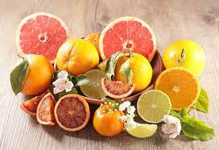
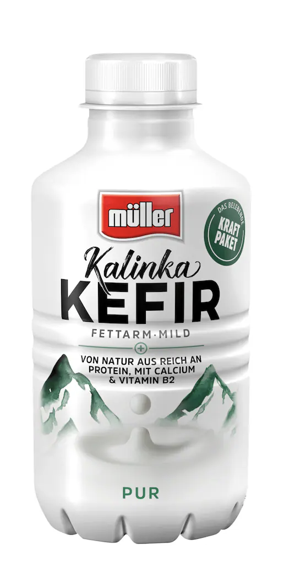

Nutritional T-cell Diet
Welcome to your personalised diet plan to keep you hyperfit 💪🏽 and enthusiatic 😊
Morning ☀️😊

Fresh Lime Juice, Oranges, Tagerine Jams with Bread are some of ways to kick the vitamin C in your body.
Keeps your skin young and youthful
Helps in Weight maintainence
Strenthens hair and reduce dandraff
Frequency: not more than a day per week
Ideal portion size: 1 whole orange/2 tbs of tangerine jams/2 glasses of lime juice
Available in all departmenal stores

The European yogurt helps to keep your immunity strong and keeping allergies at the bay
Keeps your gut health top-notch and say bye to your mood swings
Helps in healthy weight maintainence
Anti-carcinogenic properties
Bowel frequency problems might arise in case of over-consumption
Ideal portion size: 2 bottle per week (start with 1 and see the feedback)
Be it your latte or smoothies or oatmeal, pumpkin is a absolute natural sweetner
Antioxidant properties to catch the free radicals in your blood causing the harm
Good fats to keep your antioxidant levels in check
A warm cup of pumpkin latte or a cold milkshake can lower your blood pressure taking the stress away
Anti-Diabetic in nature, this food composition is good for your hormones
Ideal portion size: Quatar cup of pumpkin seeds every two days/ Two cups of Whole pumpkin a week
Afternoon 🌞